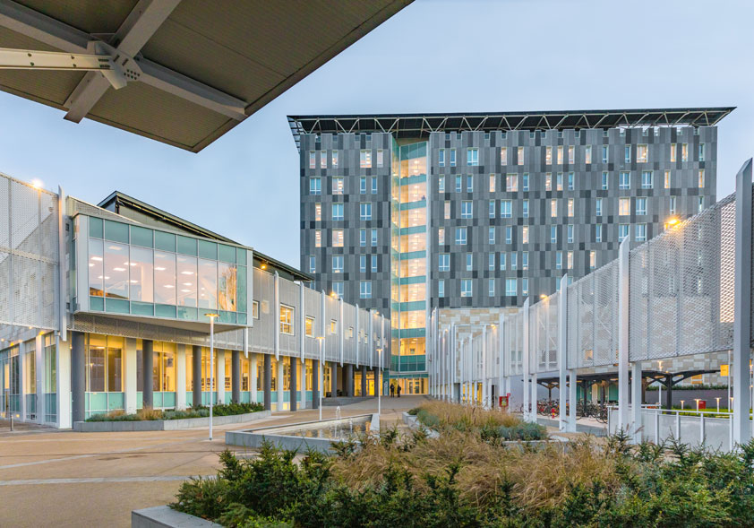

Highschool Diploma of Scientific StudiesBachelor's Degree in Computer Science with Digital Communications SpecializationUniversità degli Studi di Milano, in Milan, Italy

NOTABLE COURSEWORK:
Calculus I
Advanced Algebra
Human-Computer Interaction (HCI)
Computer Programming
Algorithms and Data Structures
Web Databases
Digital Marketing
Operating Systems
Statistics
Signal Processing
GOALS AND INTERESTS
My goal in life is to build a successful career and work very hard,
whether it's in software engineering, development, data science,
product management, or digital marketing.
Thanks to my interests in social media, finance, culture, and
problem-solving, my mission is to become an important asset to any
company, with the vision of one day owning my own business.
SKILLS
SOFT SKILLS
Multilingual: I speak Italian, Portuguese, and English fluently. I am a beginner in French and Spanish.
High adaptability.
Attention to detail and good memory.
Good communication, especially during teamwork.
High creativity.
Confident and willing to try things outside my niche.
A Wordle-style guesser game, where the goal is to guess animals.
Wrote the core of the website with Golang, as it’s the language I’m more passionate about.